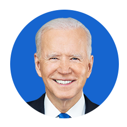
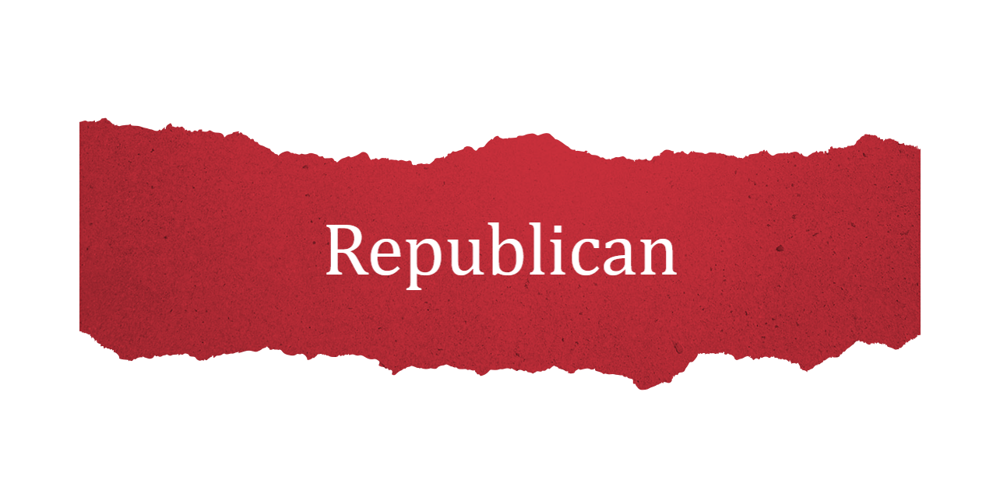
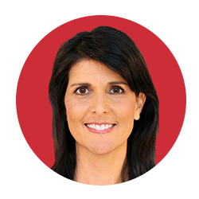
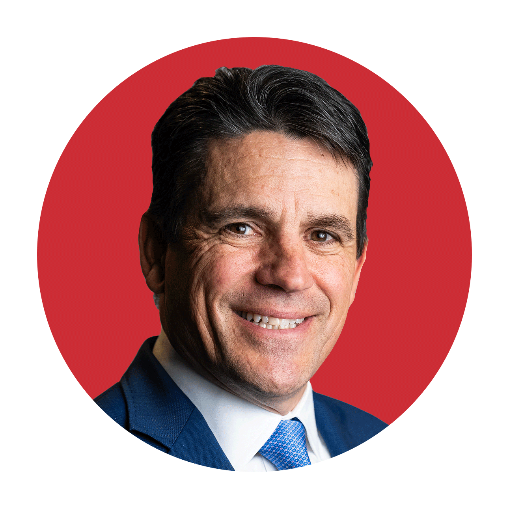
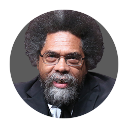
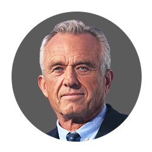
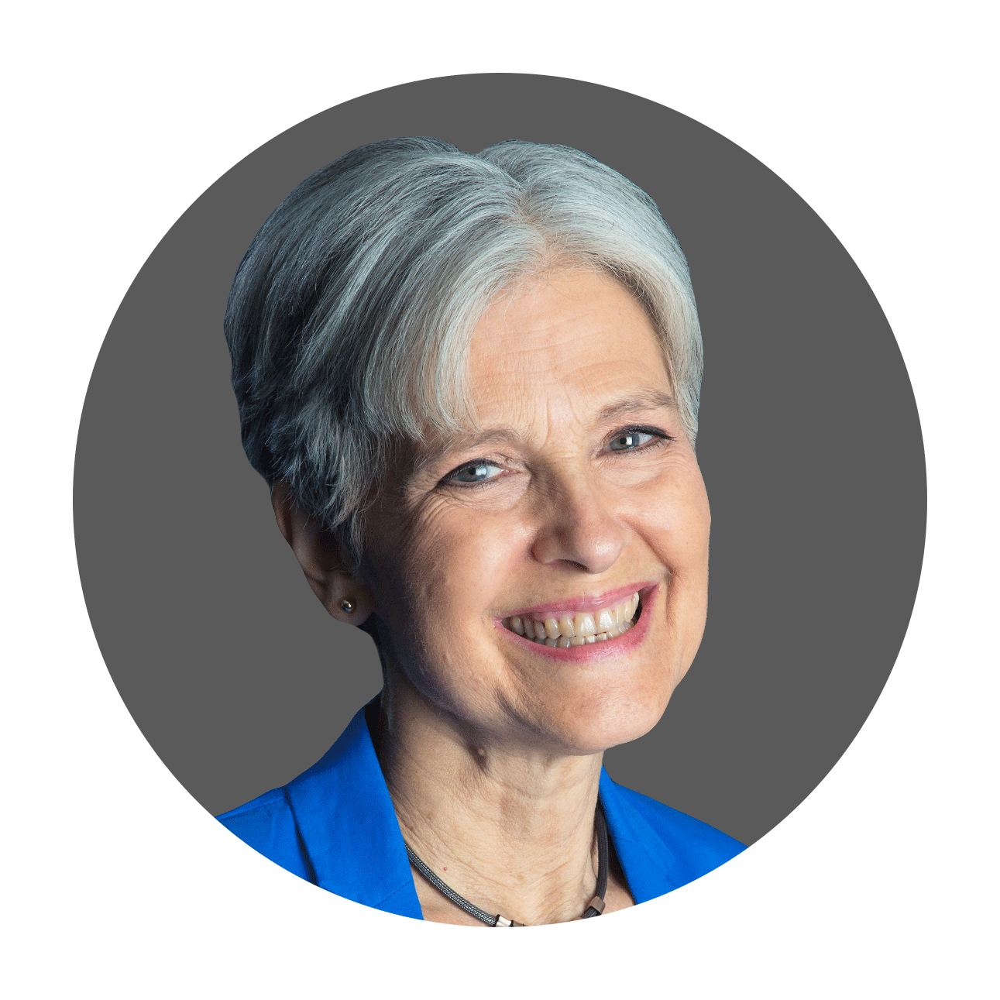

The 2024 election cycle has kicked off, and the race is heating up even as Election Day is months away.
ELECTIONS
Presidential Election
Who is running for president? Get to know the 2024 presidential candidates.

Joe Biden
Marianne Williamsonn
Dean Phillips

Donald Trump

Nikki Haley

Ryan Binkley

Cornel West

Robert F. Kennedy Jr.

Jill Stein
- Biden campaign gets online: Inside the move to join TikTok
- Trump's threats put troops at risk: Why NATO is sounding alarm
- Haley denounces Trump's attack on husband: Say it to my face
DEMOCRATE
Biden remains a strong frontrunner for his party's nomination. Several lesser-known Democratic candidates are mounting challenges to the president, but they have yet to gain much traction.
Prep for the polls: See who is running for president and compare where they stand on key issues in our Voter Guide
Joe Biden

Background: First elected in 1972, Biden served as a senator from Delaware for 36 years before being elected vice president in 2008, mounting a victory alongside former President Barack Obama. After serving two terms as vice president, he took a brief hiatus from government work before returning to run, and win, in 2020.
Views: Biden's campaign is focused on the "battle for the soul of America," doubling down on the central message of his campaign four years ago. He said the question facing the nation is "whether, in the years ahead, we have more freedom or less freedom, more rights or fewer."
Dean Phillips

Background:Phillips represents Minnesota in the House of Representatives and was first elected to Congress in 2018. Before entering politics, Phillips made his name as a businessman, heading up Phillips Distilling and serving as chair of Talenti Gelato.
His views: Phillips is a moderate with a reputation in Washington for reaching across the aisle. A member of the Problem Solvers Caucus, one of his major legislative accomplishments was the creation of the Paycheck Protection Program, which he co-authored with Texas Republican Rep. Chip Roy. The program provided loans to businesses to help them during the economic downturn caused by the COVID-19 pandemic.
Marianne Williamson

Background:Williamson is a self-help author and spiritual leader who ran unsuccessfully for president in 2020.
His views: Williamson supports abortion rights, a single-payer health care system and reparations for descendants of formerly enslaved Americans. She has suggested creating a U.S. Department of Children and Youth to increase child advocacy and a U.S. Department of Peace.
REPUBLICANS
Since his win in 2016, Trump has served as de facto leader of the Republican Party, his influence still looming large in Washington. However, after Trump-endorsed candidates suffered in the 2022 midterms, and amid concerns around his age as well, speculation swirled that there was an opening for a new leader to rise. Here are the candidates who have thrown their hat in the ring.
Ryan Binkley

Background:Binkley is CEO, president, and co-founder of the mergers and acquisitions conglomerate Generational Group. He is also a faith leader, co-founding and serving as the pastor at Create Church in Richardson, Texas.
His views: Binkley has said he hopes to prioritize balancing the budget, lowering health care costs, creating bipartisan immigration reform and putting more community emphasis on education. Binkley is against abortion rights. His campaign website says he was "thankful" when the Supreme Court overturned Roe v. Wade, but that a "culture of life" means prioritizing adoption as well.
Nikki Haley

Background: Haley started her political career in South Carolina's state legislature, where she served for 6 years before mounting a successful campaign for the governor's office in 2010. In 2016, former President Donald Trump nominated Haley to be U.S. Ambassador to the United Nations, a position she held for a year before unexpectedly stepping down in 2018.
His views: Haley opposes abortion rights and has been a vocal supporter of Israel in its ongoing war with Hamas. While on the campaign trail, she has focused on illegal immigration, advocating for a return of the Trump-era "Remain in Mexico" policy as well as the defunding of sanctuary cities. Haley has told voters she hopes to crack down on China's influence on the U.S. economy. She has supported Trump in the past but also criticized him after the Jan. 6, 2021, Capitol attack.
Donald Trump

Background: Prior to 2016, Trump dabbled in politics, often sounding off on issues like the birther movement meant to cast doubt on former President Barack Obama's citizenship and the case surrounding the now-exonerated Central Park Five. However, he was still primarily known for real estate and his forays into reality television, famously starring in "The Apprentice."
In 2016, Trump won the White House, serving a full four-year term before being defeated by Biden in his reelection bid.
His views: The former president has, without evidence, centered much of his campaign on the claim that his political enemies are fueling his ongoing criminal cases. He has said he would consider pardoning participants in the Jan. 6, 2021, Capitol riot, which his critics say was inspired by his false claims of election fraud.
THIRD-PARTY CANDIDATES
The potential of a tight Trump-Biden rematch opens the door for a third-party candidate to be integral in determining the results of the race. A third name on the presidential ballot could drain votes from either of the two major party nominees, tipping the scales toward either Biden or Trump.
Robert F. Kennedy Jr.

Background: Kennedy is an environmental lawyer known for trumpeting a debunked theory that vaccines can be linked to autism. In 2017, Trump invited Kennedy to head up a presidential commission on vaccine safety.
His views: He is campaigning on a platform of fighting for the "liberties guaranteed by the Constitution," according to his campaign website. During the COVID-19 pandemic, Kennedy opposed vaccine mandates, calling them an infringement on individual liberty and at times used the Holocaust as a historical comparison.
Cornel West

Background: West is an American academic and philosopher known for his progressive ideals. He has taught at several Ivy League institutions and works now as a professor of philosophy at Union Theological Seminary.
His views: West is a proponent of establishing Medicare for All, and barring oil and gas subsidies, as well as drilling on public lands. Long a vocal opponent of militarism, West's campaign website lists "end the wars" as a key priority, which would include disbanding NATO and banning nuclear weapons across the globe.
Jill Stein

Background: Stein is a doctor and organizer who has championed causes like campaign finance reform and environmental protection. She has run for president twice before, launching bids in 2012 and 2016.
His views: Stein paints herself as an outsider, coming in to disrupt a political system ruled by money and special interests. In her campaign launch video, posted to X, she called for an economic bill of rights including "the right to a job, to health care, to housing, to food, education and more.
Candidates who dropped out

Tim Scott

Mike Pence

Will Hurd

Asa Hutchinson

Ron DeSantis

Perry Johnson

Asa Hutchinson

Doug Burgum

Vivek Ramaswamy